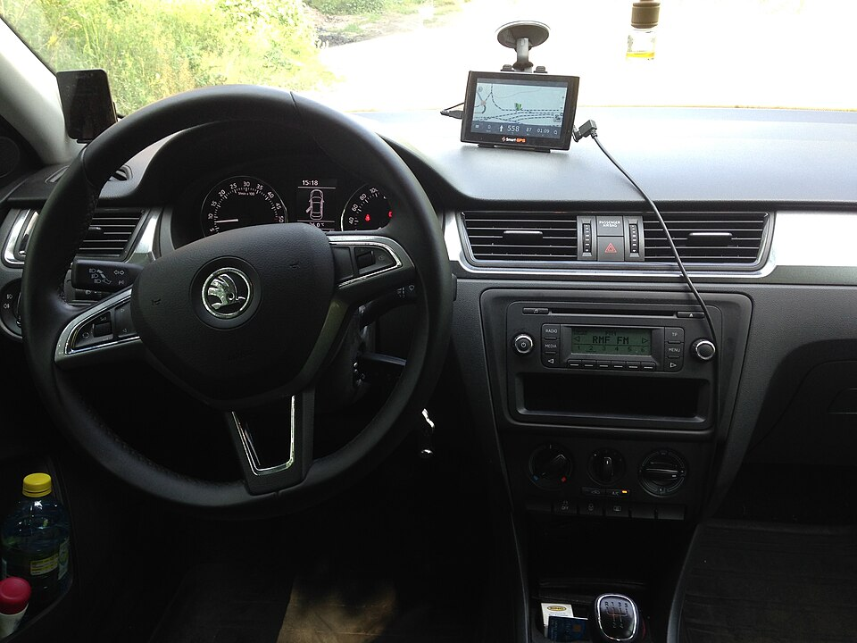
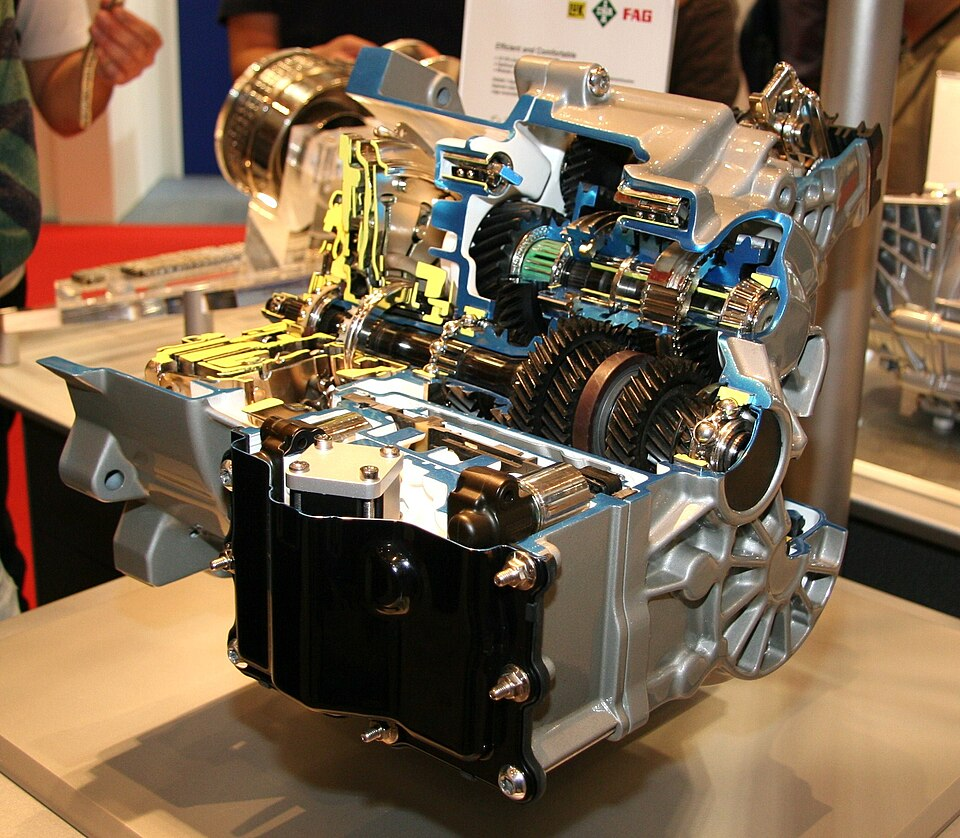
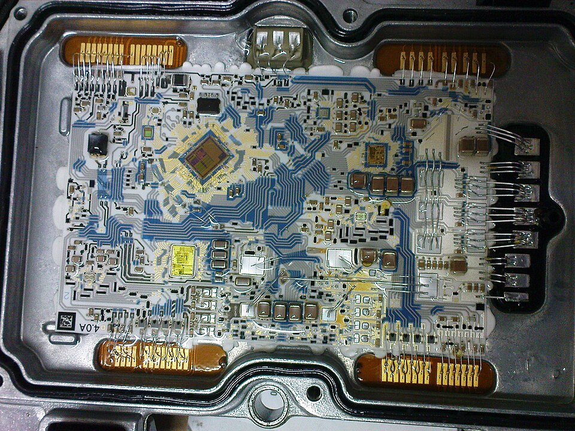
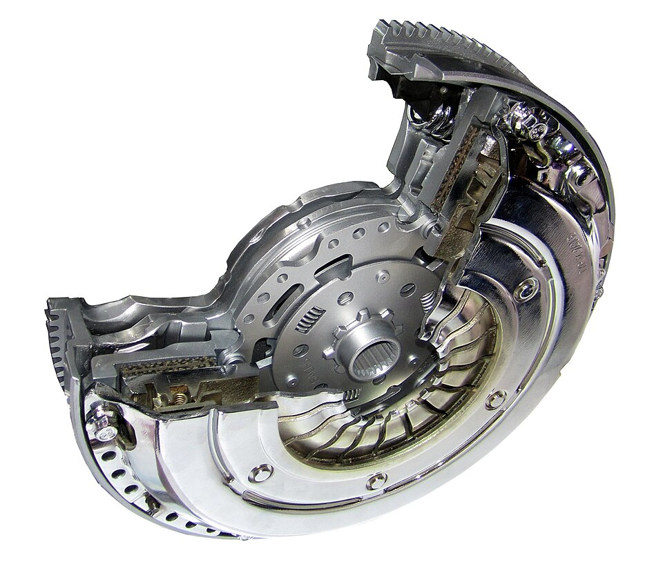
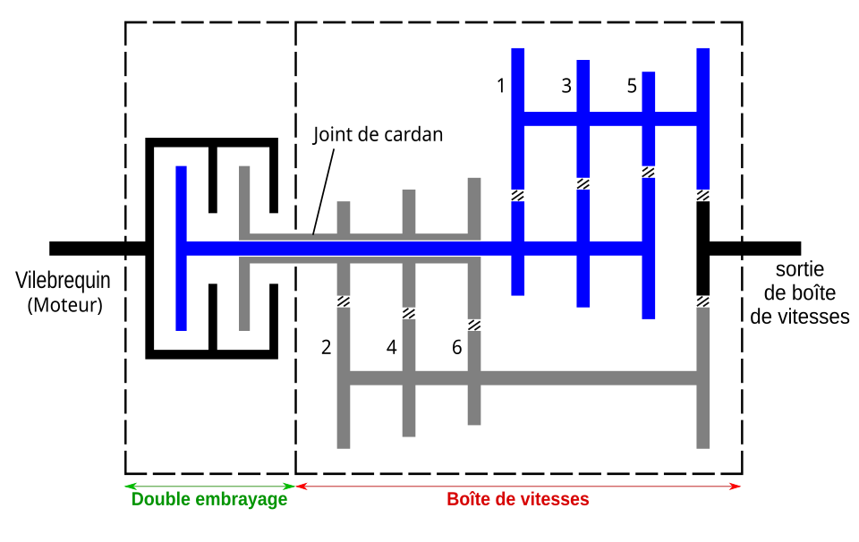
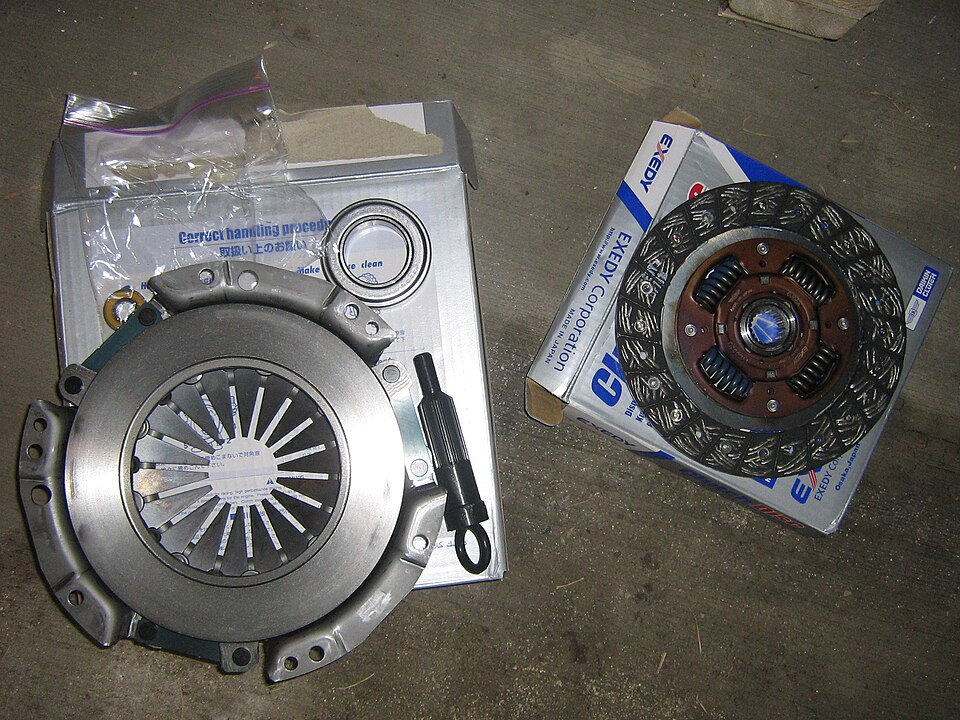
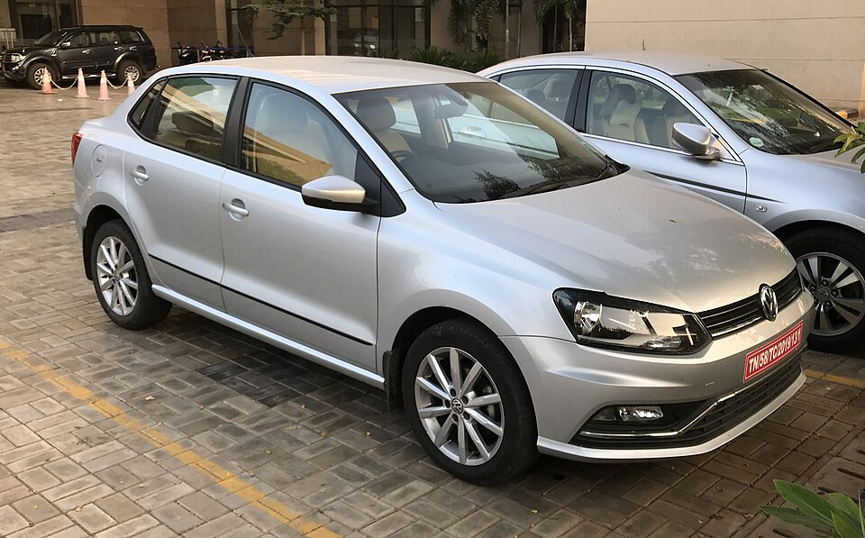
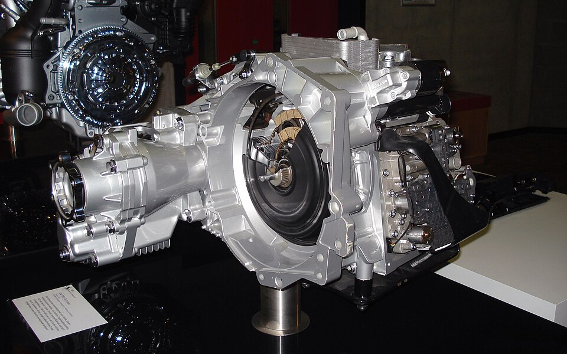

VW / Skoda specialist garage மட்டும் செய்யட்டும். 1 – 3 வாரம் ஆகும்.
படங்களில்: Swap-ல் மாறும் parts

இப்போது (Manual): Rapid TDI-ன் manual gear lever. இது எடுக்கப்பட்டு DSG lever வரும். (Europe-model Rapid; India dashboard கொஞ்சம் வேறு)

DQ200 7-speed DSG gearbox: Rapid / Vento / Ameo 1.5 TDI automatic-ல் இருப்பது இதுதான். Used unit-ஆக scrap car-லிருந்து வாங்குவார்கள்.

Mechatronic unit (DSG-ன் "மூளை"): Gearbox மேலே இருக்கும் control unit. DQ200-ல் அதிகம் fail ஆகும் part இதுதான் – used gearbox வாங்கும் முன் இதை test செய்யுங்கள்.

Flywheel + clutch (cutaway): Manual clutch & flywheel எடுக்கப்பட்டு, DSG-க்கான தனி flywheel பொருத்த வேண்டும்.

DSG எப்படி வேலை செய்கிறது: 2 clutch – ஒன்று odd gears (1, 3, 5, 7), மற்றொன்று even gears (2, 4, 6, R). அடுத்த gear முன்பே தயாராக இருப்பதால் shift வேகமாக இருக்கும்.

Manual clutch kit: Pressure plate, clutch disc, release bearing. Swap-ல் இவை அனைத்தும் எடுக்கப்படும் (DSG-ல் clutch gearbox உள்ளேயே).

Donor car: VW Ameo 1.5 TDI DSG – இதே DQ200 gearbox. Scrap Ameo / Vento / Rapid-லிருந்து parts கிடைக்கும்.

DSG gearbox உள்ளே (cutaway): பல shafts, gears, clutches – அதனால்தான் repair costly & expert வேலை. (பெரிய wet-clutch DSG மாதிரி)
3. Cost விவரம் (used parts)
Part / வேலை
Low
High
Used DSG gearbox + mechatronic
60,000
1,50,000
Gearbox repair (தேவைப்பட்டால்)
0
1,40,000
DSG flywheel
15,000
35,000
Gear lever + pedal மாற்றம்
12,500
30,000
Wiring + ECU + coding
27,000
75,000
Mounts, shafts, oil
10,000
30,000
Labour
40,000
1,00,000
RTO / insurance paperwork
0
25,000
மொத்தம்
Rs 1,64,500
Rs 5,85,000
+10% எதிர்பாராத செலவு → அதிகபட்சம் (used parts)
-
Rs 6,43,000
New Skoda parts என்றால் அதிகபட்சம்
-
சுமார் Rs 8 lakh
இவை எங்கள் estimate மட்டுமே. ஊருக்கு ஊர் மாறும். Garage-இடம் written quote வாங்குங்கள்.
4. நன்மைகள் (Pros)
Clutch இல்லை – traffic-ல் எளிது, கால் வலி குறையும்.
Gear மாற்றம் வேகமாகவும் smooth-ஆகவும் இருக்கும்.
Mileage அதேதான்: AT 21.66, MT 21.14 km/l.
5. தீமைகள் (Cons)
செலவு மிக அதிகம் – கிட்டத்தட்ட car-ன் மதிப்பு அளவு.
Delhi-NCR-ல் இருந்தால்: diesel car-க்கு 10 வருடம் மட்டுமே (2019 → சுமார் 2029). பெரிய செலவு வேண்டாம்.
7. Forums & YouTube சொல்வது
Team-BHP: மிகவும் சிக்கலான, costly வேலை. Factory automatic வாங்குவதே நல்லது.
Indian YouTube: பெரும்பாலும் எதிர் வேலை – fail ஆன DSG-ஐ manual-ஆக மாற்றுவது.
வெளிநாட்டு videos: முடியும், ஆனால் expert மட்டும் செய்யக்கூடிய வேலை.
8. எங்கள் advice
உங்கள் நிலை
சிறந்த வழி
Traffic-க்கு easy car வேண்டும்
C. விற்று automatic வாங்குங்கள் – cheap & safe.
கால் / முட்டி வலி, இதே car வேண்டும்
B. Auto-clutch kit.
இந்த car மிகவும் பிடிக்கும், பணம் பிரச்சனை இல்லை
A. DSG swap – specialist garage + RTO / insurance OK ஆன பிறகு மட்டும்.
Delhi-NCR
பெரிய செலவு வேண்டாம்.
Sources: Team-BHP, CarWale, ZigWheels, MotorBeam, CarDekho, Cartoq, Metre Per Second (Hyderabad), GoMechanic, Spinny, CarTrade, OLX India, SCC Online, Bar & Bench, Auto-Mate India, UK-Polos forum, YouTube. இது legal advice அல்ல. விலைகள் estimate மட்டுமே.